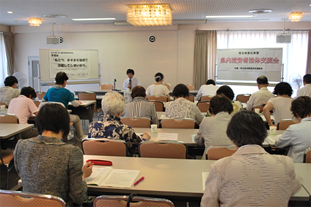

|
|
今年度第1回の消費者団体交流会が6月20日（金）、県内の19の消費者団体49人が参加し、さいたま市浦和区の埼玉会館で開催されました。  地域における消費者市民育成へ～改正消費者安全法と私たちの課題について学びました 地域での消費者行政充実と連携が課題となっている中、「私たち、ますます地域で活躍してしまいそう！」～市町村消費者行政の機能と地域体制づくりの課題～をテーマに、埼玉弁護士会前会長の池本誠司弁護士を講師に、地方消費者行政の現状とこれからの課題について学習しました。 地域での自立した消費者活動の推進へ、消費者団体同士で交流しました 午後からは、「会員の高齢化や減少、次世代への引継ぎ」「行政との協力事業、行政からのサポート」「消費生活展の運営や参加」「いまこそ、おせっかい 地域のつながり」の4つのグループに分かれて交流しました。 ■2014年度 第1回県内消費者団体交流会 【参加団体】 桶川市くらしの会、行田市くらしの会、久喜市くらしの会、生活協同組合コープみらい、 【行政からのご参加】 埼玉県（県民生活部消費生活課）、新座市（経済観光部経済振興課）、深谷市（市民生活部 市民課） |